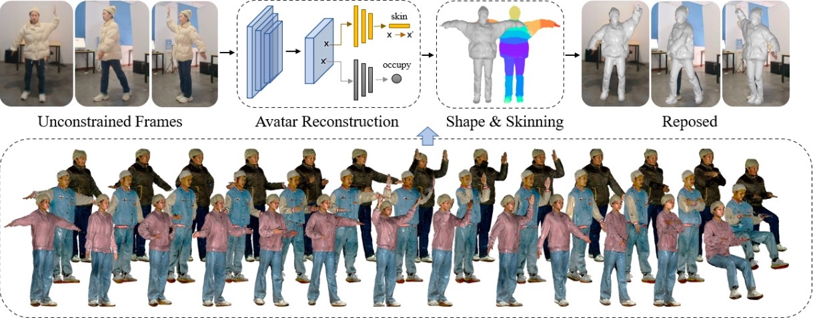
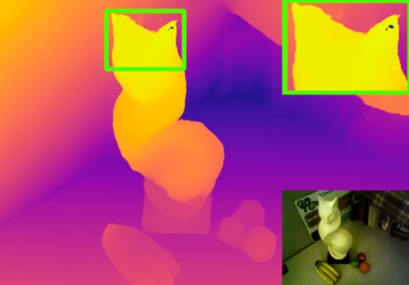
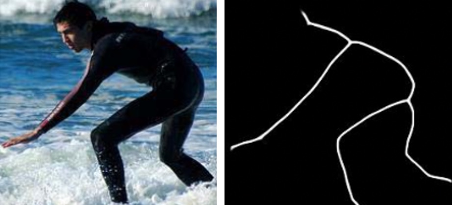
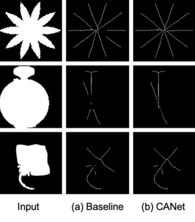
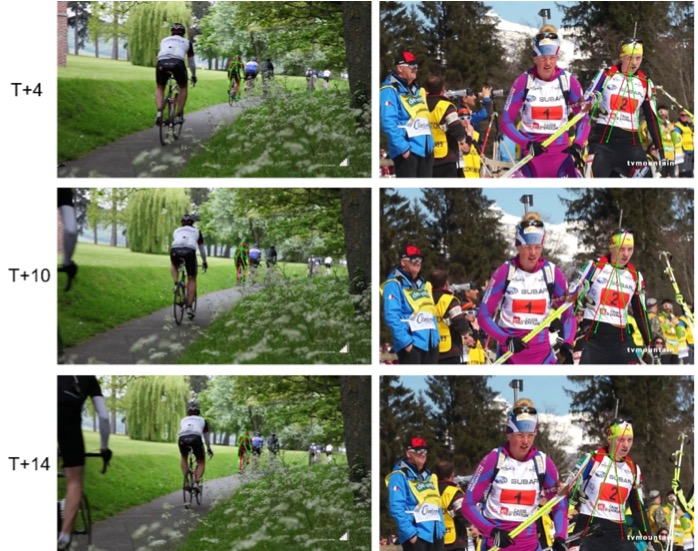

|
I'm currently working as a Staff Algorithm Engineer at Alibaba Group where I'm leading the PixelAI Algorithm Team of Tao Technology. Previously before 2017, I worked as a Video Analytic Researcher at Trakomatic Pte. Ltd., Singapore for several years. I received the B.E. degree in computer science from SJTU, under the supervision of Prof. Fan Wu in 2012 and the M.E. degree in computer science from NUS in 2014. |
|
I'm interested in computer vision, in particular, 2D&3D Human Pose Estimation, 3D Human Body Reconstruction, Virtual Try-On, etc. Below are some highlighted publications. |
|  |
Xiangyu Zhu, Tingting Liao, Xiaomei Zhang, Jiangjing Lyu, Zhiwen Chen, Yunfeng Wang, Kan Guo, Qiong Cao, Stan Z. Li, Zhen Lei IEEE Transactions on Biometrics, Behavior, and Identity Science (TBIOM) , 2022 arXiv We contribute a large-scale dataset, MVP-Human (Multi-View and multi-Pose 3D Human), which contains 400 subjects, each of which has 15 scans in different poses and 8-view images for each pose. |
|  |
Zhiwei Zhong, Xianming Liu, Junjun Jiang, Debin Zhao, Zhiwen Chen, Xiangyang Ji IEEE Transactions on Image Processing (TIP) , 2022 arXiv / bibtex We presented a novel attention-based hierarchical multi-modal fusion (AHMF) network for guided depth map super-resolution. |

|
Yi Niu, Chang Liu, Mingming Ma, Fu Li, Zhiwen Chen, Guangming Shi IEEE Transactions on Image Processing (TIP) , 2022 code / bibtex We proposed a Wide-activated Recurrent structure with a normalized Tanh activated strategy for Soft-Decoding (WRSD). |
|  |
Chang Liu, Yunjie Tian, Zhiwen Chen, Jianbin Jiao, Qixiang Ye IEEE Transactions on Image Processing (TIP) , 2021 arXiv / code / bibtex We proposed adaptive linear span network (AdaLSN), and automatically configured and integrated scale-aware features for object skeleton detection. |
|
These include workshops, challenges and awards. |

|
Zhiwen Chen (Challenge Main Organizer) Workshop and challenge on ECCV, 2022 challenge We contribute a large-scale dataset, MVP-Human (Multi-View and Multi-Pose 3D Human), which contains 250 subjects. Each subject has 15 type of different poses. Each pose contains 8-view RGB images. |
|  |
Zixuan Huang, Yunfeng Wang, Zhiwen Chen Workshop and challenge on CVPR, 2022 1st place winner of Pixel SkelNetOn Track workshop / challenge / arXiv We proposed an attention-based model called Context Attention Network (CANet), which integrates the context extraction module in a UNet architecture, can effectively improve the network’s ability to extract the skeleton pixels. |
|  |
Chenxi Wang, Yunfeng Wang, Zixuan Huang, Zhiwen Chen Workshop and challenge on ICCV, 2021 1st place winner of PoseTrack and 3DPW datasets workshop / challenge / arXiv We established a simple but effective baseline for single human motion forecasting without visual and social information. We were evaluated 1st place on both PoseTrack dataset and 3DPW dataset. |
|
Template copied from Jon Barron and Matiur Rahman Minar. |